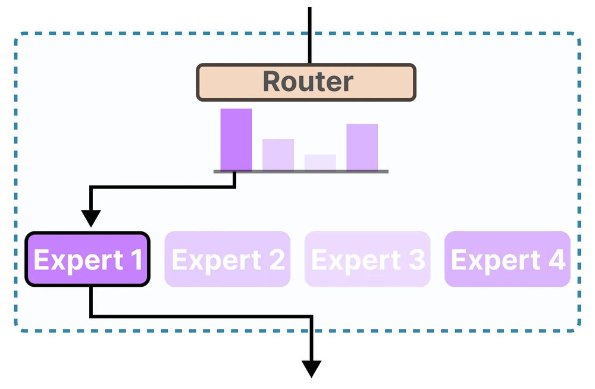

DeepSeek R1: A New Era of Reasoning-Centric Large Language Models
Large language models (LLMs) are transforming AI.
DeepSeek R1 is an open-source model that emphasizes reasoning.
It rivals closed models such as GPT-4 and Llama.
Introduced in January 2025, DeepSeek R1 builds on previous systems like DeepSeek-V3. Its efficient design offers comparable performance to top-tier systems at a lower cost. This article explores its architecture, training pipeline, and diverse applications.
1. Technical Architecture
DeepSeek R1 is based on the Transformer architecture. It tokenizes text into subword units and converts them into embeddings. Multiple self-attention layers capture both local and global dependencies.
A key innovation is the Mixture-of-Experts (MoE) design. With a total of 671 billion parameters, only about 37 billion are active per token, thanks to a dynamic routing system.
This dynamic routing enables expert specialization. For example, one group of experts may focus on code, while others excel in math.
The core self-attention operation is defined as:
Here, Query (Q), Key (K), and Value (V) matrices are derived from the input embeddings.
Advanced positional encoding strategies (e.g. rotary embeddings) support its extended context of up to 128K tokens. This is a major leap over models like GPT-4 or Llama 2.
Additionally, the backbone supports a chain-of-thought output.
The model displays reasoning steps within <think> tags, enhancing transparency.
2. Training Methodology
DeepSeek R1 was trained using a multi-stage pipeline that goes beyond the traditional pretrain–fine-tune model.
- Base Pre-training: The model was pre-trained on about 14.8 trillion tokens using FP8 mixed precision for efficiency. This phase used roughly 2.788 million GPU-hours on NVIDIA H800-class hardware.
- Reinforcement Learning Phase 1 (R1-Zero): The model was directly optimized using a rule-based reward system. It was rewarded for both correct answers and for producing a detailed chain-of-thought output.
- Supervised Fine-Tuning (SFT): Curated examples were used to refine the model’s style, ensuring clarity and language consistency.
- Reinforcement Learning Phase 2 (Alignment): Additional rewards emphasized concise, helpful responses while keeping the chain-of-thought intact.
- Model Distillation: The full 671B MoE model was compressed into smaller variants (7B, 14B, 32B) for broader accessibility.
Ethical considerations and bias mitigation were integral to the training. Although the model inherits biases from its training data, its open-source nature enables community oversight.
3. Applications and Use Cases
DeepSeek R1’s advanced reasoning and long-context capabilities unlock many applications:
- Complex Problem Solving: The model breaks down challenging math and logic problems into clear, digestible steps. For instance, it can tutor students by explaining calculus or proving theorems.
- Code Generation and Debugging: With an Elo rating of over 2000 on platforms like Codeforces, it excels in generating, reviewing, and optimizing code.
- Knowledge Assistance: Its extended context (up to 128K tokens) enables it to summarize legal documents, scientific papers, and enterprise reports.
- Creative Writing: DeepSeek R1 can generate engaging content and explain its reasoning, making it a valuable tool for writers and marketers.
- Long-Context Analysis: It can sift through contracts or meeting transcripts to deliver targeted insights.
- Research and Development: The model’s detailed chain-of-thought outputs are used to generate training data for specialized, smaller models.
Enterprises are exploring its integration into customer support systems and financial analysis tools to provide transparent, data-driven insights.
This video provides an overview of DeepSeek R1’s innovative architecture and real-world applications.
4. Code Implementation
The snippet below demonstrates how to load a distilled version of DeepSeek R1 using the Transformers library.
import torch
from transformers import AutoTokenizer, AutoModelForCausalLM
# Load DeepSeek-R1 Distilled (Qwen-7B variant)
model_name = "deepseek-ai/DeepSeek-R1-Distill-Qwen-7B"
tokenizer = AutoTokenizer.from_pretrained(model_name, use_fast=True)
model = AutoModelForCausalLM.from_pretrained(model_name, torch_dtype=torch.float16, device_map="auto")
# Define a complex question with a chain-of-thought prompt
question = "Q: What is the sum of the first 10 prime numbers? Let's think step by step.\nA:"
inputs = tokenizer(question, return_tensors="pt").to("cuda")
outputs = model.generate(**inputs, max_new_tokens=256, do_sample=False, temperature=0.0)
response = tokenizer.decode(outputs[0], skip_special_tokens=True)
print(response)
The output may include a detailed chain-of-thought trace, for example:
This transparency helps verify the final answer and aids in debugging.
Another example is using DeepSeek R1 for code generation. Consider this prompt for a Python function to check if a number is prime:
# A prompt for code generation
code_prompt = "Q: Write a Python function to check if a number is prime.\nA:"
inputs = tokenizer(code_prompt, return_tensors="pt").to("cuda")
outputs = model.generate(**inputs, max_new_tokens=200, temperature=0.2)
print(tokenizer.decode(outputs[0], skip_special_tokens=True))
The model may output code along with its reasoning, enhancing clarity and trust.
5. Challenges and Limitations
Despite its advanced capabilities, DeepSeek R1 faces several challenges:
- Resource Intensity: With 671B parameters (37B active per token), it requires significant computing power. Even with MoE reducing per-token costs, real-time deployment needs high-end infrastructure.
- Complexity of MoE: The dynamic routing adds challenges in fine-tuning and deployment. Balancing expert usage often requires custom engineering solutions.
- Emergent Behaviors: The reinforcement learning approach may cause overly verbose outputs. While the chain-of-thought is valuable, in casual use users might prefer concise answers.
- Knowledge Cutoff: Its training data is current up to around 2024. In rapidly changing fields, this can result in outdated or incorrect information.
- Bias and Ethics: The model inherits biases from its training data. Ongoing monitoring and community oversight are essential to mitigate potential issues.
- Long-Context Challenges: Handling up to 128K tokens is innovative, but extended contexts can slow processing and dilute focus if too much text is provided.
- Evaluation and Trust: Benchmark scores are strong, but real-world performance may vary, particularly in nuanced or commonsense reasoning tasks.
These challenges emphasize the need for continuous research and iterative improvements. Future iterations (e.g., DeepSeek R2) are expected to address these limitations.
6. Industry Impact and Future Directions
DeepSeek R1 marks a turning point for both research and industry. Its open-source nature and state-of-the-art reasoning capabilities promote collaboration and innovation.
Enterprises in finance, healthcare, and customer support are already exploring its integration. Its ability to process long documents enables in-depth report analysis, risk assessment, and enhanced decision-making.
Looking ahead, multi-modal models that combine text with images or audio are on the horizon. Researchers are exploring how to integrate external tools (e.g., calculators or databases) directly into the reasoning process.
The community-driven development model ensures continuous feedback, and distilled variants make the technology accessible to organizations with limited resources. Experts predict these models will soon be standard in fields requiring transparent reasoning.
Future research aims to further compress models without sacrificing performance, improve the interpretability of chain-of-thought outputs, and develop robust safety protocols.
7. Conclusion
DeepSeek R1 is a monumental achievement in large language models. By combining a powerful Mixture-of-Experts architecture with innovative reinforcement learning techniques, it achieves advanced reasoning and problem-solving capabilities that were once limited to proprietary systems.
Its design emphasizes transparency through chain-of-thought outputs, allowing users to see not only the final answers but also the reasoning behind them.
This article has examined DeepSeek R1’s technical architecture, multi-stage training pipeline, diverse applications, and the challenges it faces. It also discussed the significant industry impact and future directions for reasoning-centric AI.
As research continues and community contributions drive further improvements, AI systems will not only solve complex problems but also explain their reasoning in a human-like manner. This transparency is essential for building trust and ensuring responsible deployment.
In conclusion, DeepSeek R1 is not just another large language model—it is a comprehensive platform for reasoning-centric AI that sets a new benchmark in the field and offers a glimpse into the future of autonomous, explainable AI.
For further reading and technical details, please consult:
- DeepSeek R1 Technical Report
- Mixture-of-Experts in Language Models
- Attention is All You Need
- Reinforcement Learning
This comprehensive article has provided an in-depth look into DeepSeek R1’s innovations, applications, challenges, and future directions—marking a new era in reasoning-centric AI.
Comments